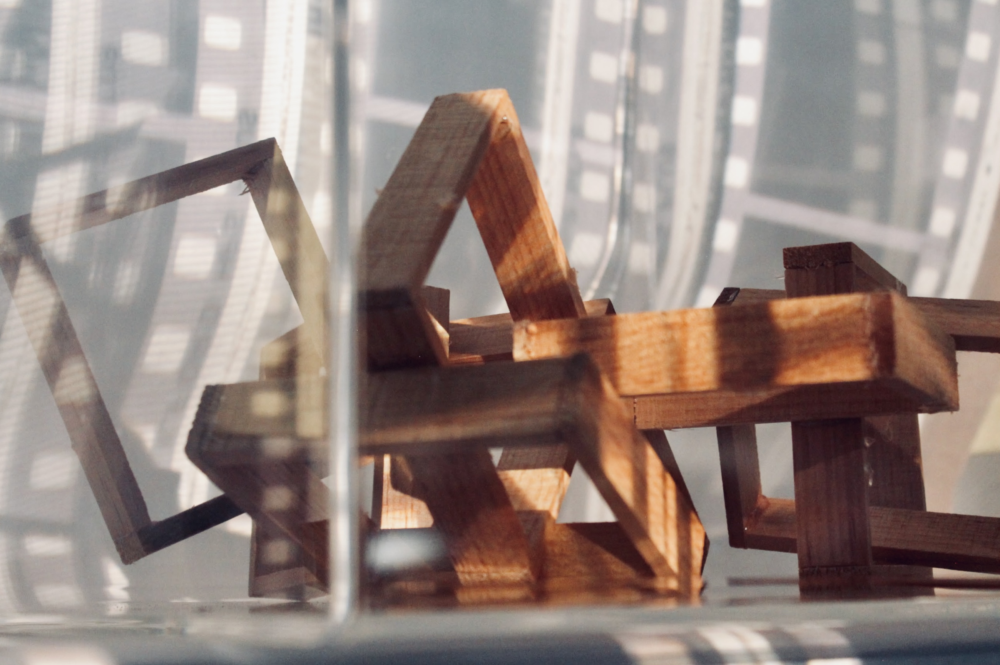
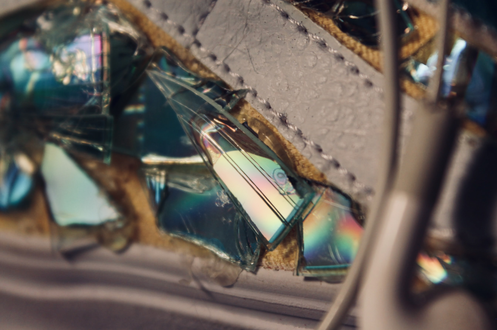

Amara Medeiros
About Me
My name is Amara Medeiros. I live in Bristol, RI. I graduated from
Mount Hope High School in 2021. I currently attend NEIT and i'm majoring
in cybersecurity and network engineering.
I have a cat named Hendrix, named after Jimi Hendrix; and also
I have a dog named Sammy, named after Samwise, from Lord of the Rings.
My favorite webiste is YouTube
Schooling
- Kickemuit Middle School
- Mount Hope High School
- New England Institute of Technology
Hobbies

- Digital art
- Music
- Hiking